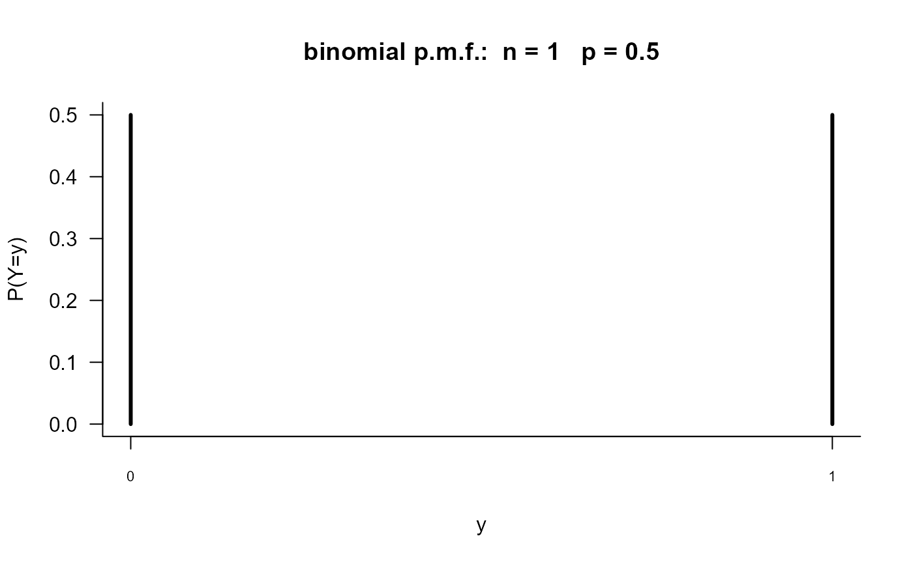
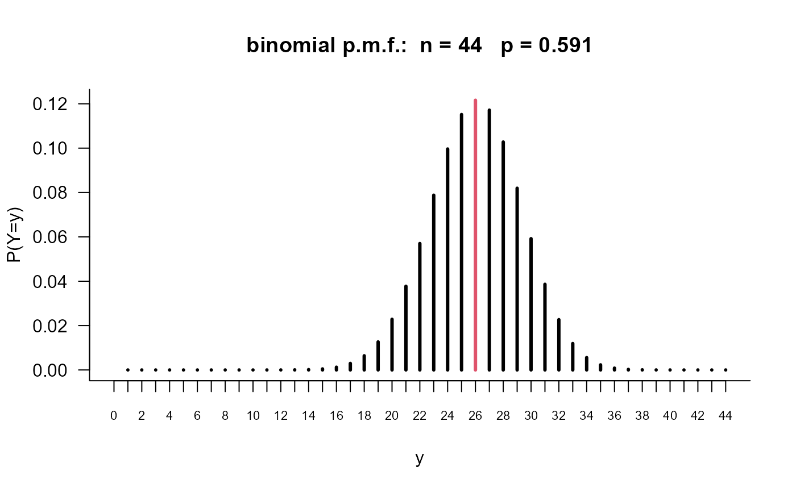
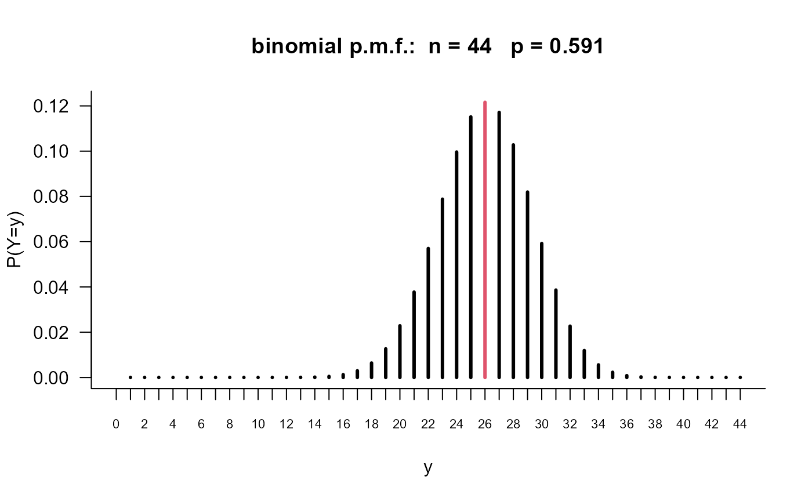

A movie to illustrate how the probability mass function (p.m.f.) of a binomial (n, p) random variable depends on n and p.
binomial_pmf_movie(
starting_n = 1,
starting_p = 1/2,
delta_n = 1,
delta_p = 0.05,
observed_value = NA
)Arguments
- starting_n
A numeric scalar. The value of n for the first graph.
- starting_p
A numeric scalar. The value of p for the first graph.
- delta_n
A numeric scalar. The amount by which n is increased (or decreased) after one click of the + (or -) button in the parameter window.
- delta_p
A numeric scalar. The amount by which p is increased (or decreased) after one click of the + (or -) button in the parameter window.
- observed_value
A non-negative integer. If
observed_valueis supplied then the corresponding line in the plot of the p.m.f. is coloured in red. Ifobserved_valueis not an integer thenround(observed_value)is used.
Value
Nothing is returned, only the animation is produced.
Details
The probability mass function of a binomial random variable with parameters \(n\) (the number of Bernoulli trials performed) and \(p\) (the probabilities of success on a each trial) is plotted. The values of \(n\) and \(p\) can be changed by clicking on the relevant buttons.
See also
stat0002movies: general information about the movies.
Examples
binomial_pmf_movie()
# Increase n and see what happens
binomial_pmf_movie(delta_n = 10)

# Sample size of the Aussie births data (26 boys, 18 girls)
binomial_pmf_movie(starting_n = 44, starting_p = 0.1, delta_p = 0.1,
observed_value = 26)
 # Start at p = 0.591 (approximately 26/44)
binomial_pmf_movie(starting_n = 44, starting_p = 0.591, delta_p = 0.01,
observed_value = 26)

# Start at p = 0.591 (approximately 26/44)
binomial_pmf_movie(starting_n = 44, starting_p = 0.591, delta_p = 0.01,
observed_value = 26)
